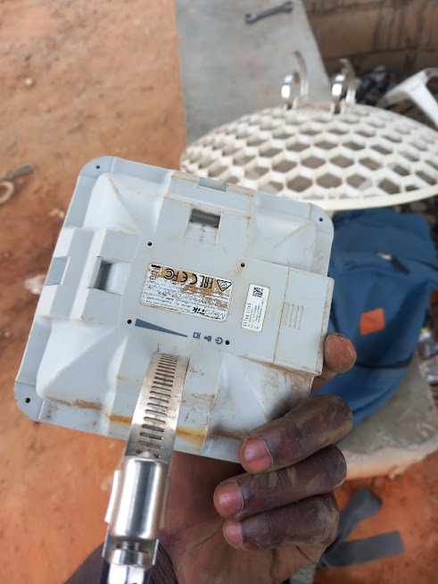
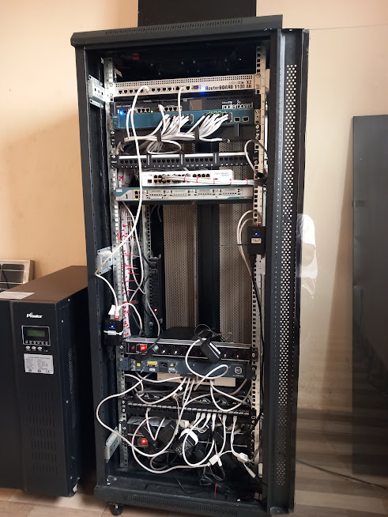
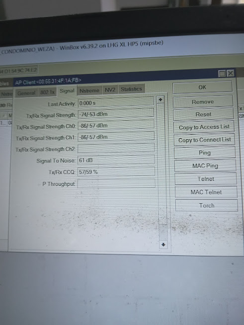
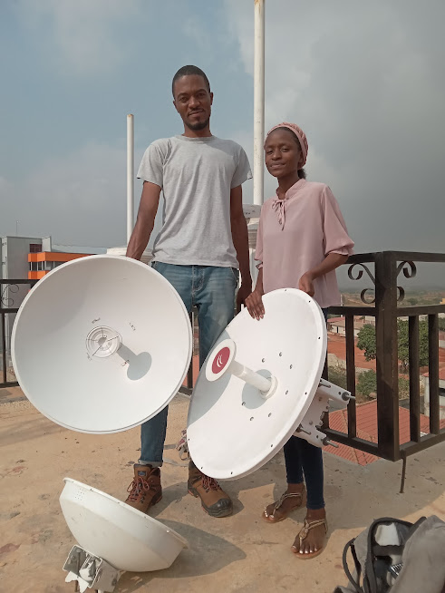
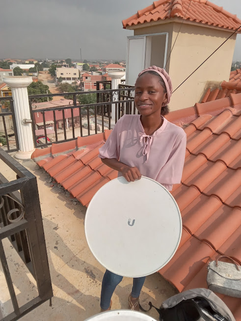

Sobre mim
O quem Sou?
Sou um profissional com formação em Ciências Físicas e Biológicas e ampla experiência na área de informática, desenvolvimento web e redes de computadores. Habilidades sólidas em programação, criação de sites responsivos e dinâmicos e configuração de redes locais. Busco oportunidades para aplicar meu conhecimento técnico e científico, contribuindo para projetos inovadores e colaborando em equipe
Título da Carreira: Engenheiro de Software e Redes
Descrição: Como Engenheiro de Software e Redes, você será responsável por projetar, desenvolver e manter sistemas de software robustos e redes eficientes para empresas e organizações. Este papel combina habilidades avançadas de programação com um profundo entendimento de arquiteturas de rede, garantindo que os sistemas sejam seguros, escaláveis e resilientes.
Responsabilidades:Desenvolvimento de Software: Criar e manter aplicações de software utilizando diversas linguagens de programação (como Python, Java, C++, entre outras) e frameworks relevantes.
Arquitetura de Redes: Projetar e implementar arquiteturas de rede seguras e escaláveis, incluindo configuração de servidores, roteadores, firewalls e protocolos de comunicação.
Segurança Cibernética: Implementar medidas de segurança para proteger os dados e sistemas contra ameaças cibernéticas, incluindo análise de vulnerabilidades e resposta a incidentes.
Otimização de Desempenho: Monitorar e otimizar o desempenho da rede e dos sistemas para garantir alta disponibilidade e eficiência operacional.
Colaboração Interdisciplinar: Trabalhar em equipe com outros profissionais de TI, como administradores de sistemas, analistas de segurança e desenvolvedores de software, para integrar sistemas e resolver problemas complexos.
Educação: Graduação em Ciência da Computação, Engenharia de Computação, Engenharia de Software, ou área relacionada. Pós-graduação pode ser um diferencial.
Experiência: Experiência comprovada em desenvolvimento de software e administração de redes. Conhecimento em ferramentas de monitoramento de rede e segurança cibernética.
Habilidades Técnicas: Proficiência em linguagens de programação, sistemas operacionais, protocolos de rede, e conhecimento de práticas de desenvolvimento ágil.
Habilidades Interpessoais: Boas habilidades de comunicação, capacidade de trabalhar em equipe, e aptidão para resolver problemas de forma criativa e eficiente.
Perspectivas de Carreira: Como Engenheiro de Software e Redes, você terá oportunidades de crescimento em empresas de tecnologia, provedores de serviços de Internet, grandes corporações, e setores governamentais. A demanda por profissionais qualificados nessa área é alta, com possibilidades de avançar para cargos de liderança técnica ou especialização em segurança cibernética.
Descrição: Como Engenheiro de Software e Redes, você será responsável por projetar, desenvolver e manter sistemas de software robustos e redes eficientes para empresas e organizações. Este papel combina habilidades avançadas de programação com um profundo entendimento de arquiteturas de rede, garantindo que os sistemas sejam seguros, escaláveis e resilientes.
Responsabilidades:
Qualificações Necessárias
Meus Serviços
Desenvolvimento Web
Criação de sites responsivos e modernos, utilizando as melhores práticas de desenvolvimento.
Manutenção e Instalação de Redes de Computadores
Serviços completos de instalação e manutenção de redes, garantindo uma conexão eficiente e segura.
Configuração de Equipamentos Mikrotik
Especialização em configuração e gerenciamento de dispositivos Mikrotik para otimização de redes.
Imagens





×